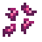
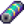

Poissonnerie
| Poissonnerie | |
 | |
| Heures d'ouverture : | 9h à 17h |
| Fermé : | Samedis quand il ne pleut pas (bâtiment ouvert mais pas le comptoir) |
| Occupants : | |
La Poissonnerie est la maison de Willy. Elle se situe sur le quai principal de la plage, au sud de Pélican Ville. Elle est accessible à partir du 2 Printemps de l'Année 1. Bien que la poissonnerie soit ouverte, la boutique est fermée les samedis, sauf s'il pleut.
Willy vend une variété d'articles de pêche à l'intérieur, comme des cannes à pêche, des appâts, des matériels de pêche et des casiers à crabes. Du nouveau matériel est vendu en magasin à chaque fois que le joueur augmente sa compétence de pêche en capturant des poissons. La canne à pêche en iridium est mise en vente dès que le niveau 6 de la compétence pêche est acquis, vous n'avez donc pas besoin d'attendre le jour suivant.
Vous pouvez également vendre des poissons et des coquillages à Willy s'il se trouve derrière son comptoir.
Stock
Les objets suivants sont disponibles dès que la Poissonnerie est ouverte : Soupe à la truite, Appât spécifique, Canne à pêche en bambou, Canne à pêche d'apprenti, Petit aquarium, Grand aquarium, Poisson suspendu, et Lit double pêcheur.
| Image | Nom | Description | Prix | |
|---|---|---|---|---|
| Fumoir à poisson (Recette) | Une recette pour faire : Fumoir à poisson | N/A | ||
| Soupe à la truite | Très salée. | N/A | ||
|  | Appât | Pousse les poissons à mordre plus rapidement. Doit d'abord être attaché à une canne à pêche. | 2 | |
| Appât de luxe | Fait mordre les poissons encore plus vite et augmente la taille de la "barre de pêche". | 4 | ||
| Appât spécifique | Augmente vos chances d'attraper : <nom du poisson>.
Willy vend chaque jour une quantité limitée d'un appât spécifique, pour le double de son prix de vente. Voir la section Appâts spécifiques pour plus d'informations. |
N/A | ||
| Casier à crabes | Placez-le dans l’eau, remplissez-le d’appâts et vérifiez le lendemain si vous avez attrapé quelque chose. Fonctionne dans les cours d’eau, les lacs et la mer. | 3 | ||
| Flotteur à sonar | Montre quel est le poisson qui se trouve sur la ligne avant qu'il ne soit attrapé. | 6 | ||
| Leurre | Sa forme le fait tourner dans l'eau. Augmente légèrement le taux de touche quand on pêche. | 6 | ||
| Piège flotteur | Le poisson s'échappe plus lentement quand vous ne les ramenez pas. | 6 | ||
| Flotteur en plomb | Ajoute du poids à votre "jauge de pêche", l’empêchant de rebondir en bas. | 6 | ||
| Chasseur de trésor | Les poissons ne s’échappent pas lorsque vous collectez des trésors. Augmente aussi légèrement les chances de trouver des trésors. | 7 | ||
| Flotteur en liège | Augmente légèrement la taille de votre "jauge de pêche". | 7 | ||
| Ardillon | Assure votre prise permettant que la "jauge de pêche" reste accrochée à votre prise. Fonctionne mieux sur les poissons lents et faibles. | 8 | ||
| Hameçon à leurre | Sa languette en métal et ses serpentins colorés créent un spectacle attrayant pour les poissons. Augmente le nombre de prises lors de la pêche. | 8 | ||
| Aimant | Augmente les chances de trouver des trésors lors de la pêche. Cependant, les poissons ne raffolent pas du goût. | 9 | ||
| Canne à pêche en bambou | À utiliser dans l'eau pour attraper des poissons. | N/A | ||
| Canne à pêche d'apprenti | Beaucoup plus facile à utiliser que les autres cannes à pêche, mais ne peut attraper que des poissons communs. | N/A | ||
| Canne à pêche en fibre de verre | À utiliser dans l'eau pour attraper des poissons. | 2 | ||
| Canne à pêche en iridium | À utiliser dans l'eau pour attraper des poissons. | 6 | ||
| Canne à pêche supérieure d'iridium | À utiliser dans l'eau pour attraper des poissons. Il est possible d'attacher jusqu'à deux flotteurs en même temps. (Disponible après avoir obtenu celle de la Grotte de maîtrise) |
N/A | ||
| Tamis en cuivre | À utiliser pour récupérer du minerai dans les cours d'eau. (Disponible après avoir complété le paquet de l'Aquarium) |
N/A | ||
| Grand aquarium | Peut se mettre à l’intérieur de votre maison. | N/A | ||
| Petit aquarium | Peut se mettre à l’intérieur de votre maison. | N/A | ||
| Grand aquarium de luxe | Peut se mettre à l’intérieur de votre maison. (Disponible après avoir fini la quête "Poisson tropical") |
N/A | ||
| Poisson suspendu | Peut se mettre à l’intérieur de votre maison. | N/A | ||
| Lit double pêcheur | Peut se mettre à l’intérieur de votre maison. | N/A |
Appâts spécifiques
Chaque jour, Willy vend une quantité limitée (8-12) d'un Appât spécifique (par ex. Appât de : Poisson-chat, Appât de : Sardine) pour le double du prix de vente de l'appât. L'appât mis en vente dépend de la saison. Voici la liste des appâts spécifiques que Willy propose selon les saisons :
| Saison | Appât spécifique possible à la vente |
|---|---|
| Appât d'Achigan à grande bouche ; Appât d'Achigan à petite bouche ; Appât d'Anchois ; Appât d'Anguille ; Appât de Dorade ; Appât de Flet ; Appât de Poisson-chat ; Appât de Poisson pierre ; Appât de Sardine | |
| Appât d'Achigan à grande bouche ; Appât de Brochet ; Appât de Dorade ; Appât de Dorade coryphène ; Appât d'Esturgeon ; Appât de Flet ; Appât de Grand concombre de mer ; Appât de Poisson-glace ; Appât de Poisson-globe ; Appât de Poulpe ; Appât de Rouget ; Appât de Sardine ; Appât de Thon ; Appât de Tilapia ; Appât de Truite arc-en-ciel | |
| Appât d'Achigan à grande bouche ; Appât d'Achigan à petite bouche ; Appât d'Albacore ; Appât d'Anchois ; Appât d'Anguille ; Appât d'Anguille de lave ; Appât de Carpe de minuit ; Appât de Dorade ; Appât de Poisson-chat ; Appât de Poulpe ; Appât de Sardine ; Appât de Saumon ; Appât de Tilapia | |
| Appât d'Achigan à grande bouche ; Appât d'Albacore ; Appât d'Anguille de lave ; Appât de Brochet ; Appât de Calamar ; Appât de Carpe de minuit ; Appât de Dorade ; Appât de Doré jaune ; Appât d'Esturgeon ; Appât de Grand concombre de mer ; Appât de Morue-lingue ; Appât de Perche ; Appât de Poisson-chat ; Appât de Poisson-glace ; Appât de Poisson pierre ; Appât de Rouget ; Appât de Sardine ; Appât de Thon |
Achats
Willy peut acheter les objets suivants au joueur:[1]
- Tous les Poissons (mais pas le Poisson fumé)
- Tous les Appâts
- Tous les Matériels de pêche
- Les objets ramassés sur la plage et les coquillages, notamment Palourde, Corail, Coquillage, Coquille arc-en-ciel, et Oursin
- Les Oeufs de poisson (mais pas le Caviar ou les Oeufs de poisson marinés)
- L'Encre de Calamar
Il n'achète cependant aucun autre objets attrapable (Déchets, Algues vertes, Algues blanches, Algues, Gelée des cavernes, Gelée de rivière, ou Gelée de mer).
Stock dérivé du joueur
Si le joueur vend des objets à la poissonnerie, il y a une chance que ces objets soient ensuite vendus par Willy, d'autant plus si le joueur en a vendu en grande quantité. Tous ces objets seront disponibles à la vente en quantité limitée. Des dialogues spéciaux avec les villageois pourront se produire, indiquant qu'ils ont vu ou acheté ces objets.
Machine à flotteurs

A droite du comptoir de Willy se trouve la Machine à flotteurs, qui permet au joueur de choisir entre différents styles de flotteurs. Le jouer a le choix entre des flotteurs spécifique et l'option "aléatoire" qui choisira un flotteur différent au hasard à chaque lancer, parmi ceux débloqués.
Au début du jeu, seul le flotteur par défaut est disponible. Chaque nouveau flotteur est débloqué une fois que le joueur a pêché 2 nouveaux poissons. Les flotteurs sont débloqués dans l'ordre, donc le 10ème flotteur ne sera disponible qu'une fois que le joueur a pêché 18 poissons différents.
Il existe 39 flotteurs différents à débloquer. Pour tous les avoir, le joueur doit au total pêcher 76 poissons différents. Il existe 77 poissons différents à attraper (les 72 de l'onglet de la collection, et les 5 Poissons légendaires II).
Bateau de Willy
Après avoir complété la quête principale de Willy et réparé le Centre communautaire, Willy envoie une lettre au joueur l'invitant dans son arrière-boutique, à la poissonnerie. Quand le joueur arrive, il trouve un ponton caché avec un vieux bateau en ruine. Ce dernier peut être réparé, suite à quoi il pourra emmener le joueur sur l'Île Gingembre pour  1 000po. Willy n'a pas besoin d'être en service pour que le joueur utilise le bateau.
Le bateau aura besoin des matériaux suivants :
1 000po. Willy n'a pas besoin d'être en service pour que le joueur utilise le bateau.
Le bateau aura besoin des matériaux suivants :
- La coque du bateau nécessite
 Bois dur (200).
Bois dur (200). - La borne à tickets nécessite  Pile (5).
- L'ancre en Iridium nécessite
 Lingot en iridium (5).
Lingot en iridium (5).
Une fois le bateau réparé, une cinématique se déclenche dans la nuit dans laquelle Willy et Robine restaurent le bateau. Cette cinématique sera décalée si une autre cinématique est prévue pour la même nuit.
Dès lors, la poissonnerie sera ouverte dès 8h du matin, même si les horaires de Willy restes inchangées. Le joueur peut acheter un ticket dans l'arrière-boutique. Willy pilotera le bateau, quel que soit son emploi du temps.
En pêchant à l'intérieur de l'arrière-boutique, il y a 20% de chance d'attraper une Bouée de sauvetage.[2]
Anecdotes
- Interagir avec l'échelle au fond de la boutique résulte en un message insinuant que Willy vit à l'étage.
Références
Galerie

Intérieur
Historique
- 1.4 : Le stock dérivé du joueur vendu à Willy apparaît dans le stock de la Poissonnerie au lieu de celui de Pierre. Ajout de la Canne à pêche d'apprenti et du Tamis en cuivre au stock.
- 1.5 : Ajout au stock des petits et grands aquariums ainsi que du Lit double pêcheur. Ajout du bateau de Willy.
- 1.6 : Ajout de la recette de Fumoir à poisson, Appât de luxe, Flotteur à sonar, Poisson suspendu, et appâts spécifiques à la boutique. Introduit la Machine à flotteurs.
- 1.6.9 : Le joueur peut maintenant accéder au bâtiment à partir du 2 Printemps de l'Année 1, même sans avoir lu la lettre de Willy. Correction du bug permettant aux buffs de pêche de débloquer des objets du magasin plus tôt que prévu. Ajout de la canne à pèche supérieure d'iridium au stock de la boutique.